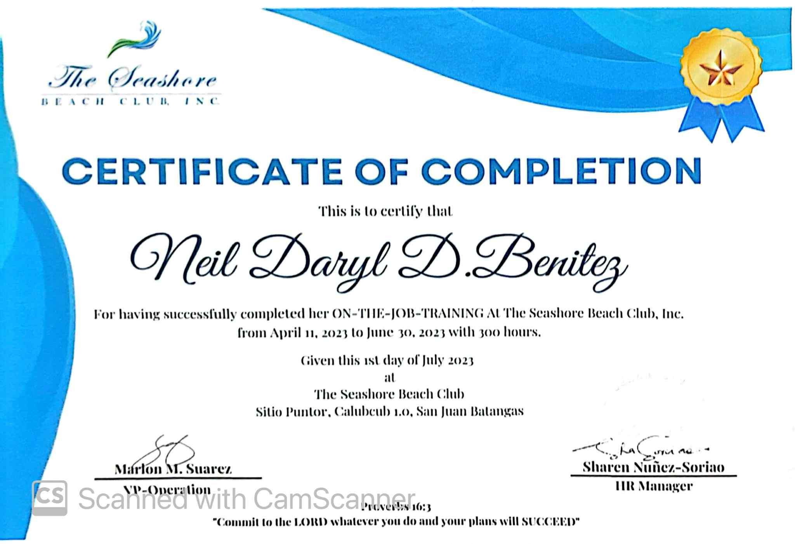
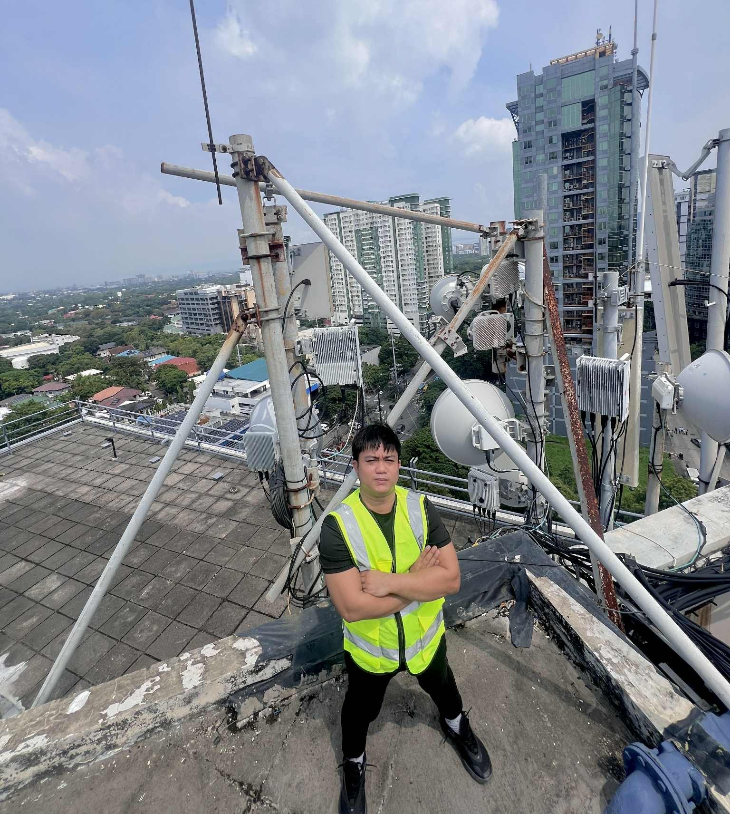
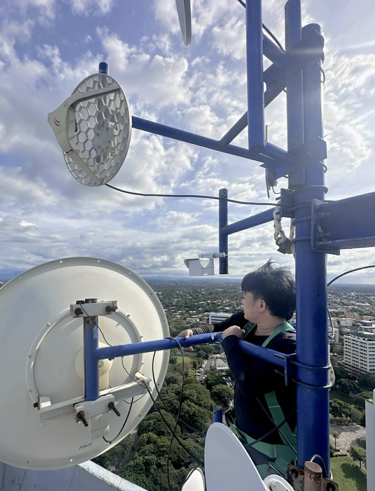
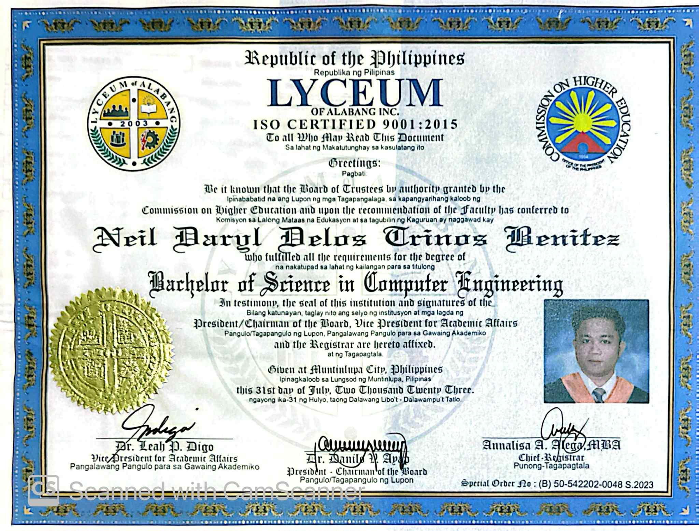

Certificates of Employment
ATM Field Engineer

One Point Contact Inc.
February 20, 2024 – May 24, 2025 | Full-timeIT Support Intern

I am a Computer Engineering graduate with professional experience in IT Support, Network Operations, and Network Engineering. My career progression from technical support to NOC and field network deployment has equipped me with strong troubleshooting skills, infrastructure knowledge, and real-world operational experience.
I started in IT Support, handling hardware diagnostics, system setup, cabling, CCTV infrastructure, wireless configuration, and technical troubleshooting. This foundation strengthened my ability to resolve technical issues efficiently and support end-users in live environments.
As a NOC / Network Engineer, I perform 24/7 network monitoring, incident management, bandwidth optimization, firewall and VPN configuration, and real-time troubleshooting of packet loss, latency, and connectivity issues. I also conduct site surveys, deploy wireless Point-to-Point (PtP) and Point-to-Multipoint (PtMP) systems, install and align radios, and ensure stable, secure network performance for enterprise and government clients.
I am committed to maintaining reliable, secure, and high-performance network infrastructure while continuously improving operational efficiency and minimizing downtime.
Download Resume

Network Monitoring & Proactive Troubleshooting (ICMP Testing, OSPF Tracing & Verification)
Bandwidth Management & Traffic Analysis
Router & Wireless Access Point Configuration (Tenda, TP-Link, Omada)
Point-to-Point (PtP) & Point-to-Multipoint (PtMP) Radio Deployment & Alignment
LAN / UTP Cabling, Structured Cabling, Cable Crimping & Termination
PoE Setup, UPS Installation & On-Site Network Device Replacement
Fortinet Firewall Configuration, IP/MAC Access Control & VPN Management
Site Assessment & Network Deployment
Ticketing System Documentation & Incident Reporting
Basic Web Development: HTML, CSS, JavaScript, Bootstrap

